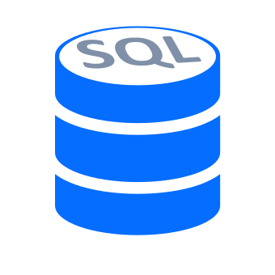

Saludos Mi estimado/a mi nombre es Lucas Ezequiel Sanchez estoy interesado en desarrollar mi carrera
profesional en el área de sistemas como desarrollador Python y/o soporte técnico. Mi pasión por la
tecnología y el aprendizaje continuo me ha llevado a buscar oportunidades en este campo emocionante
y en constante crecimiento. Como futuro desarrollador Python tengo la suficiente autonomía para
buscar documentación o material relacionado a mi desconocimiento y avanzar con los objetivos a
desarrollar esa iniciativa me hace capaz de superar la incertidumbre, adquiriendo conocimiento a un
ritmo progresivo o veloz dependiendo la magnitud del problema a solucionar.
Además, como soporte técnico IT, tengo habilidades en el armado de PC, la resolución de problemas de
software y hardware, la instalación y configuración de sistemas operativos. Tengo una mentalidad
analítica y crítica, y me gustaría trabajar en colaboración con otros profesionales para aprender y
encontrar soluciones a los desafíos técnicos.
Estoy entusiasmado de tener la oportunidad de poder empezar como Trainee/Jr junto a profesionales
experimentados en el campo, aprender nuevas habilidades y poner en práctica mis conocimientos en
proyectos interesantes, desafiantes y así poder ir subiendo de categoría. Estoy comprometido a
trabajar duro y a aprovechar al máximo cualquier oportunidad para desarrollar mi carrera profesional
en el área de trabajo.
¿Qué es lo que puedo ofrecer? Puedo ofrecer entusiasmo, ganas de aprender y una mentalidad abierta
para adquirir nuevas habilidades y conocimientos. Aunque no tenga experiencia laboral previa, estoy
motivado para desarrollarme como profesional y hacer una contribución valiosa a la empresa. Estoy
altamente motivado a trabajar duro para adquirir la experiencia necesaria para corresponder al
puesto de trabajo. Soy capaz de trabajar en equipo o de manera independiente y tengo un fuerte
interés por aprender a trabajar con herramientas y tecnologías de vanguardia.
Programación
-

HTML -

CSS - FLEX -

PYTHON -

SQL
Bases de Datos


Conocimientos Técnicos
- Armado, Limpieza, Mantenimiento de Gabinetes.
- Instalación y/o Actualización de Hardware, Software, Sistemas Operativos y Periféricos.
- Muy Básico de redes (TCP/IP, Windows Server 2012, Active Directory)
- Conocimiento en programas de ofimática.
- Word
- Excel(básico)
- Powerpoint
- Gmail
Estudios Académicos
Escuela Técnica N°21 DE 10 "Fragata Escuela Libertad"
Orientación : Programación
Nombre del Título: Técnico en Informática Profesional y Personal en Programación
Año de ingreso
2017
Año de Egreso
2019
Proyectos Personales
| Python | Calculadora Console |
Antes 
Ahora 
Este proyecto se basa en la interacción con la terminal. En mis proyectos implemento la base de
datos MongoDB, a continuación dejo las funcionalidades que tiene la misma. |
Formularios Console |
|
|---|
 Este proyecto se basa en la interacción con la terminal. Presento las Funcionalidades que
contiene este proyecto formulario.
Este proyecto se basa en la interacción con la terminal. Presento las Funcionalidades que
contiene este proyecto formulario.| HTML & CSS | CV WEB |
Este Proyecto Web lo pensé para implementar mis conocimientos en HTML y CSS que voy adquiriendo con el tiempo y quería llevar a cabo esto realizando un curriculum web para poder facilitar mi información o mi perfil en el área IT, ya que es de mi total orgullo poder realizar esto y demostrarme a mí mismo que si puedo, que si se aprende con dedicación, tiempo y compromiso. [ Ver Aquí] |
|---|
DESCARGA DE ARCHIVOS
- Curriculum Vitae
- Carta de Presentación